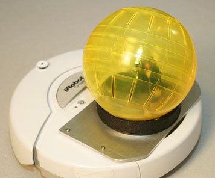

As I’ve moved away from photojournalism, I’ve applied its frameworks towards a new methodology I call “research-driven art.” Like photojournalism, research-driven art uses specific structures and a sense of purpose to constrain it. These constraints work much like a skeleton works: while they stabilize the practice just as a rib cage stabilizes a body, they do not define the entire practice, nor keep it from moving and flexing on its own. In this way, the research I do stabilizes and shapes my art, but does not dictate the outcome.
Library
How to make research-driven art
Caroline Sinders, 2018
Download PDF:
Research-Driven Art.pdf
Towards Relational Design
Andrew Blauvelt, 2008
Download PDF:
Towards Relational Design.pdf

If the first phase of design offered us infinite forms and the second phase variable interpretations — the injection of content to create new forms — then the third phase presents a multitude of contingent or conditional solutions: open-ended rather than closed systems; real world constraints and contexts over idealized utopias; relational connections instead of reflexive imbrication; in lieu of the forelorn designer, the possibility of many designers; the loss of designs that are highly controlled and prescribed and the ascendency of enabling or generative systems; the end of discrete objects, hermetic meanings, and the beginning of connected ecologies.
Conditional Design Manifesto
Luna Maurer, Edo Paulus, Jonathan Puckey, Roel Wouters, 2008
Download PDF:
Conditional Design Manifesto.pdf

Through the influence of the media and technology on our world, our lives are increasingly characterized by speed and constant change. We live in a dynamic, data-driven society that is continually sparking new forms of human interaction and social contexts. Instead of romanticizing the past, we want to adapt our way of working to coincide with these developments, and we want our work to reflect the here and now. We want to embrace the complexity of this landscape, deliver insight into it and show both its beauty and its shortcomings.
Captives of the Cloud: Part I
Metahaven, 2012
Download PDF:
Captives of the Cloud, Part
I -
Metahaven.pdf

The various technical components that enable global communication—server, network, and client—all lend themselves to surveillance. Access Controlled, a MIT Press handbook on internet surveillance and censorship, states that “the quest for information control is now beyond denial.”
How Geocities Suburbanized the Internet
Tanner Howard, 2019
Download PDF:
How
Geocities
Suburbanized the Internet.pdf

In the 1990s, AOL and Netscape got Americans onto the web, but it was Geocities—with its suburban-style “neighborhoods”—that made them feel at home.
Emoticon, Emoji, Text II: Just ASCII
Tom McCormack, 2013
Download PDF:
Emoticon,
Emoji, Text II - Just ASCII.pdf

Following in the footsteps of Baudelaire—and paving the way for the Surrealists and the French New Wave—early 20th-century artist Guillaume Apollinaire cultivated a cerebral taste for the most sensational elements of modern life. A poet by calling and a publicist by trade, Apollinaire seized on the outrageous whether he found it in the avant-garde (he coined the term "Cubism" in praise of early paintings by Braque and Picasso) or mass culture (he called the serialized tales of fictional super-villain Fantômas "one of the richest works that exist.") Apollinaire’s poetry fed on the chaos of Paris in the early 1900s.